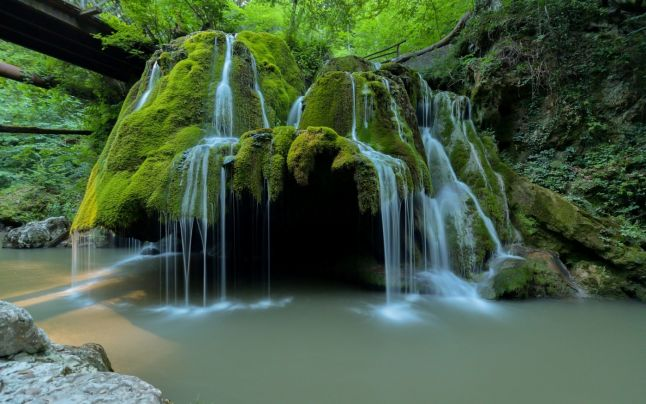

Aflată în apropiere de localitatea Bozovici din județul Caraș-Severin, Bigar a devenit unul dintre principalele obiective turistice din Parcul Național Cheile Nerei-Beușnița. Tot acolo este și locul de trecere prin țara noastră a Paralelei 45. Așadar, Cascada Bigăr se află în Valea Minisului, la jumătatea distanței dintre localitățile Anina și Bozovici, pe DN57B și la jumătatea distanţei dintre Polul Nord şi Ecuator. Apa ce curge la cascada Bigăr este bogată în calcar și se varsă în răul Miniș de pe un prag stâncos de circa 8 metri înălțime, acoperit cu mușchi, formând celebra cascadă. Apa iese de sub o stâncă ce are o înălțime de peste 50 de metri. Culorile se schimbă în funcție de razele soarelui și îți dau senzația că ai în față o apa vie, atât este de minunată. . Cascada a devenit foarte populară în ultimii ani, în urma mai multor campanii de promovare și amenajare a zonei. După amenajarea eco-turistică, numărul turistilor s-a dublat. Dacă în perioada 2016-2017 au vizitat cascada 50.000 de turiști, în intervalul 2017-2018, numărul lor ar fi depășit 100.000 Citeşte întreaga ştire: Cascada Bigăr - care e povestea ei și ce poți vizita în apropiere Citeşte întreaga ştire: Cascada Bigăr - care e povestea ei și ce poți vizita în apropiere
---------------------------------------------------------------------------------------------------  ---------------------------------------------------------------------------------------------------